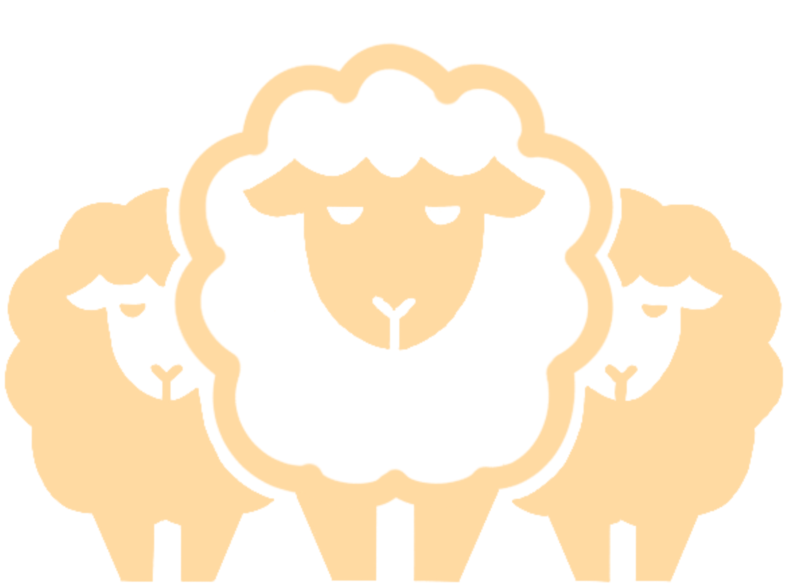

Score:
Counter:
Timer:
Game has been Paused
Return to Game
Quit and Exit the Game
Music
Sound
Difficulty Level
Languages
Credits
Legal
Customer Servive
Do you want to exit the game?
Return to Game
Quit and Exit the Game
Welcome to the Sheep and Shepherd Game!
To win this game, you need to find all the lost sheep that has the word of the verse on them, find the word in order.
Now! Help the shepherd to find all his lost sheep!
Play Game